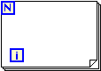

For Loop
Owning Palette: Structures
Requires: Base Development System
Executes its subdiagram n times, where n is the value wired to the count (N) terminal. The iteration (i) terminal provides the current loop iteration count, which ranges from 0 to n-1.

 Add to the block diagram Add to the block diagram |
 Find on the palette Find on the palette |
Terminal Inputs
The count terminal specifies the number of times to execute the code inside the For Loop. If you wire 0 or a negative number to the count terminal, the loop does not execute. This terminal is displayed by default. | |
(Optional) The parallel instances terminal specifies the number of loop instances LabVIEW uses to run parallel loop iterations. If you leave the input of the parallel instances terminal unwired, LabVIEW automatically detects the number of logical processors in the machine and uses it as the default parallel instances terminal value. You can use the input of the parallel instances terminal and the Number of generated parallel loop instances in the For Loop Iteration Parallelism dialog box to improve For Loop performance by oversubscribing or undersubscribing. To display this terminal, enable parallel For Loop iterations. | |
(Optional) The chunk size terminal specifies the custom iteration schedule used to execute chunks of loop iterations in parallel when you enable parallel For Loop iterations. You should specify a custom schedule only if the For Loop would benefit from a schedule different from the default. To display this terminal, programmatically configure the loop iteration schedule. | |
(Optional) The conditional terminal allows you to specify additional conditions for stopping the For Loop. The For Loop normally stops after executing the number of iterations you specify using the count terminal. However, you can use the conditional terminal to stop the For Loop when other conditions occur, such as an error. By default, the conditional terminal is set to Stop if True. You can change the behavior of the conditional terminal to Continue if True. To display this terminal, set the For Loop to stop when a condition occurs. |
Terminal Outputs
| (Optional) The count terminal indicates the number of times to execute the code inside the For Loop. | |
(Optional) The iteration terminal indicates the number of completed iterations. The first iteration is 0. This terminal is displayed by default. | |
(Optional) Right-click the terminal and select P Terminal Output to specify the output of the parallel instances terminal. The terminal provides the following outputs:
| |
| (Optional) Indicates the size of the chunk containing the loop iteration that LabVIEW is currently executing. |
For Loop Tunnel Inputs
Loop tunnels allow you to pass data through the For Loop. You can change the tunnel mode to handle data that passes through the For Loop in different ways, as listed in the following table.
| The tunnel passes data into and out of the For Loop without additional manipulation. | |
| Shift registers access data from the previous loop iteration and pass data to the next loop iteration. | |
| When you wire an array or a collection data type to the input tunnel of the For Loop, the auto-index tunnels read and process one element in the array or collection per loop iteration. |
For Loop Tunnel Outputs
You can configure the For Loop to return the last value of the last loop iteration, an indexed array of every value generated by the loop, or a concatenated array of every value generated by the loop by right-clicking the loop output tunnel and selecting Tunnel Mode from the shortcut menu.